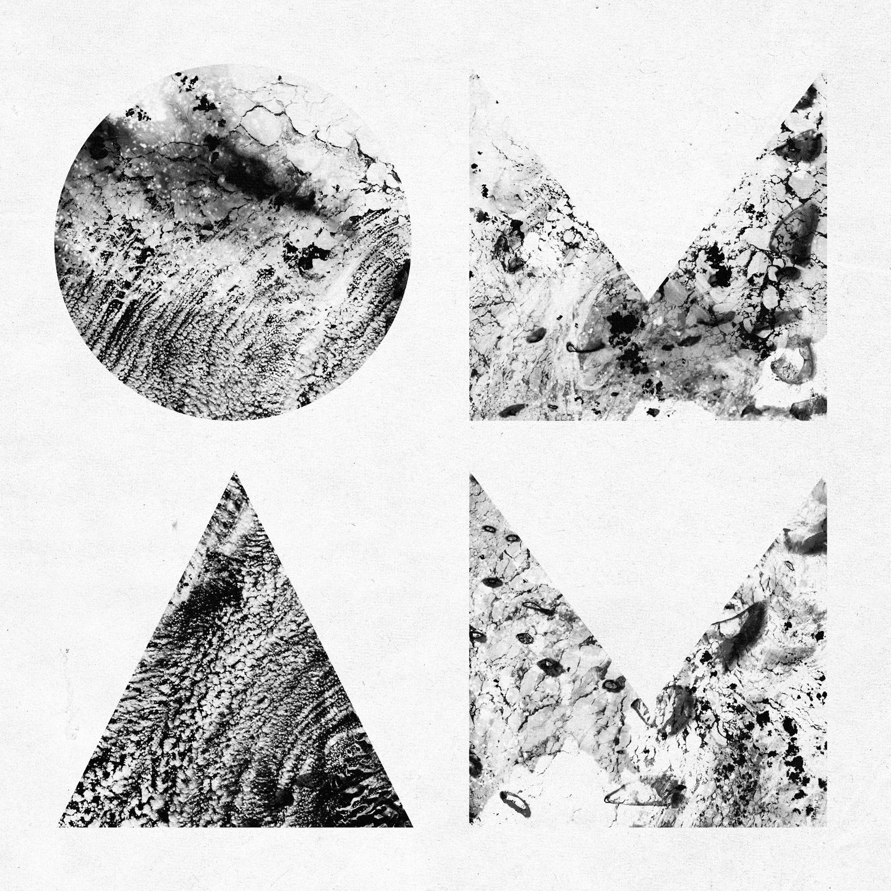
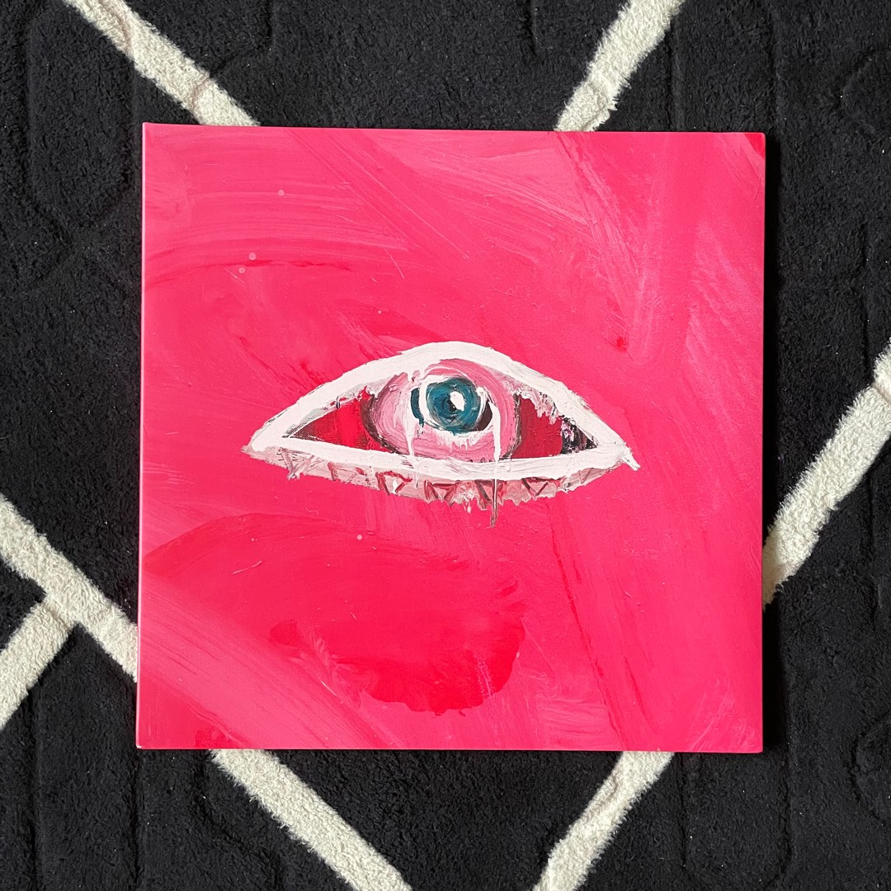

Sobre a banda
Of Monsters and Men (ocasionalmente abreviado como OMAM) é uma banda de indie folk formada na Islândia em 2010. É composta pelos islandeses Nanna Bryndís Hilmarsdóttir, Ragnar "Raggi" Þórhallsson, Brynjar Leifsson, Arnar Rósenkranz Hilmarsson e Kristján Páll Kristjánsson. Em 2012, o ex-integrante Árni Guðjónsson anunciou sua saída da banda para terminar os estudos. A banda foi formada após um projeto solo da vocalista, chamado Songbird, que depois recrutou os outros integrantes da banda.
A banda ganhou sucesso internacional depois de vencer a batalha anual de bandas na Islândia, Músíktilraunir, em 2010. Em 2011, o Of Monsters and Men lançaram um EP intitulado Into the Woods. O álbum de estréia de 2011 da banda, My Head Is an Animal, atingiu a posição #1 na Austrália, Islândia, Irlanda e nas categorias Rock e Alternative Songs dos Estados Unidos, enquanto alcançou a posição #6 na Billboard 200 como melhor álbum, #3 do Reino Unido, e o Top 20 da maioria das tabelas européias e canadenses. Seu principal single, "Little Talks" foi um sucesso internacional, alcançando o Top 10 na maioria das paradas musicais na Europa, incluindo o #1 na Irlanda e na Islândia e #1 em Alternative Songs dos Estados Unidos.
Eles ganharam o European Border Breakers Awards de 2013.
The Cabin Sessions
Discografia
-

My Head Is An Animal
Ouça o ÁlbumAno2013
# Músicas 11
Duração 59:38
Gênero Indie Folk
-

Beneath the Skin
Ouça o ÁlbumAno2015
# Músicas 11
Duração 48:33
Gênero Indie Folk
-

Fever Dream
Ouça o ÁlbumAno2019
# Músicas 11
Duração 40:30
Gênero Eletrônica | Indie Folk
Prêmios
- European Border Breakers Awards (2013)
- 1° lugar na ARIA Charts (My Head Is An Animal)
- 1° lugar no Canadian Albums Chart (Beneath the Skin)
- 1° lugar em Rock - Billboard Top 200 (My Head Is An Animal)
- 1° lugar em Rock - Billboard Top 200 (Fever Dream)